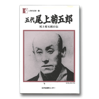

音羽屋をより深く知るための本
音羽屋をより深く知るための本 > 『五代尾上菊五郎 尾上菊五郎自伝』
尾上菊五郎『五代尾上菊五郎 尾上菊五郎自伝』
（日本図書センター 1997年）明治の歌舞伎を挿話で読む
現代歌舞伎の基礎は、明治期に固まったと言われています。この本を読むと、九代目市川團十郎と競いつつ、新しい時代の歌舞伎を探求していった五代目の姿が浮かび上がってきます。
第一部の技芸の巻は、出世狂言となった「弁天小僧」からはじまります。一枚の絵草紙を河竹黙阿弥のもとへ持ち込んだところから、芯となる役者の五代目菊五郎を中心にアイデアがふくらみ、この狂言が新作歌舞伎として作られていった過程がよくわかります。鬘、衣裳、小道具が、いかに工夫されていったかも詳しく書かれていますから、「五代目の型」として知られている演出や工夫が、いかに組み立てられていったかをたどることができます。
五代目の話は、「四谷怪談」の三代目の型を詳述し、「戻橋」を復活する苦労談に及びます。また、「舞台上の研究」と題した項では、手拭の持方ひとつで、侍、職人、商人、百姓では違い、時代と世話の区別を明確にしています。舞台に出した後は、手拭ひとつもぞんざいにせず、霧を吹き、伸ばし、畳んでしまっておくエピソードには、小道具を大事にする気質がうかがえます。
第二部の履歴の巻では、誕生および幼時からはじめ、脳溢血で倒れるまでが綴られています。江戸から明治へ。激動の時代だったはずですが、五代目はあくまで江戸の粋を実生活でも大切にしたことがよくわかります。
たとえば、火事と聞いては家にじっとしていられず、家に帰って刺子半纏に着替えなければ野次馬にも行けないと話します。「イナセなところが見せたい」のです。江戸の町人の美意識を、歌舞伎に凝縮してみせようとしたのが、現在にも古典として残る世話物を次々と創りだした五代目の仕事でした。日常生活と舞台が、ひとつらなりであった時代の空気が読み取れます。
初版は、「尾上菊五郎自伝」として一九○三年、時事新報社から出版されています。現代仮名遣いに直した再版は、「人間の記録 四十二巻」として容易に入手できます。
Copyright © Otowaya All Rights Reserved.